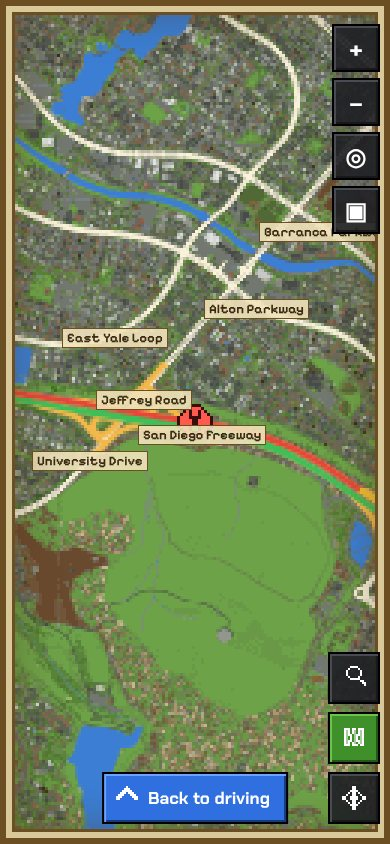
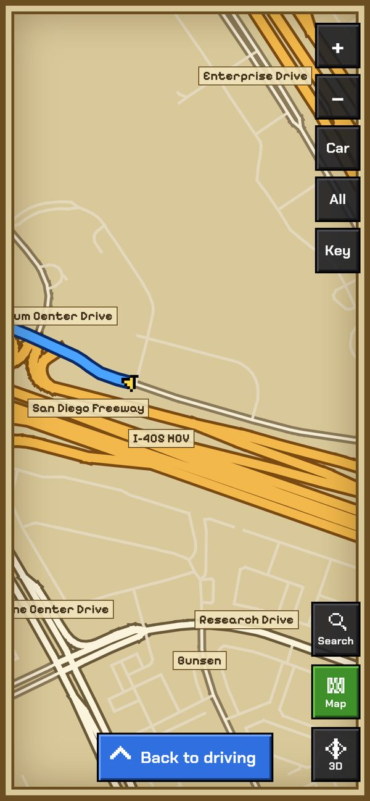
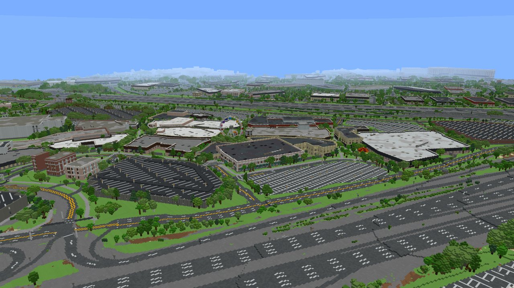
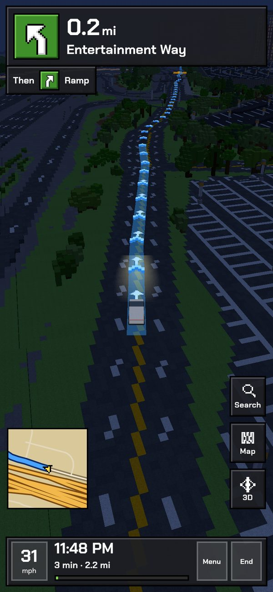

The same Irvine. In blocks.
Every road, building and tree comes from real map data and sits where it really is. Drag the slider to compare.


Four levels. About a minute.
Everything you need is on one screen. Tap a level to see that part up close.
One app. Eight ways to get around.
Every screen here is a real capture of Map Craft running on Irvine.
Search that forgives you
Places, streets and real street addresses across Irvine, all searchable from one box. Misspell it and Map Craft asks if you meant the right place.
- 2,835 places and every street address
- Fixes typos: "spectrm" finds Irvine Spectrum
- Results show the kind of place and how far it is
- Go now, or add it as a stop

Know before you go
Set a From and a To, or start from where you are, and the route and drive time appear on the map right away.
- From your location or any place
- Swap start and destination in one tap
- Drive time from usual and live road speeds
- Your location stays in your browser

Turn by turn, the blocky way
A big next-turn card, the street name and distance, arrows painted onto your lane and block chevrons floating over the road ahead.
- Next turn and the one after it
- Arrival time, distance left and speed
- Drag to look around, tap Re-center to snap back
- A minimap in the corner while you drive

Live traffic, rerouted
Freeway sensor speeds, lane closures and Highway Patrol incidents show up on the map and change your route.
- Roads colored by live speed
- Crashes and closures marked with road signs
- A faster way offered when the road ahead is blocked
- Refreshed every minute while you drive


A whole city at a glance
Switch to the 2D map to see where you are, where you're going and what's around, then jump straight back to driving.
- Zoom out to all of Irvine
- Tap anywhere to drop a pin and go
- A map key for every symbol
- Back to driving in one tap

Fly over Irvine in 3D
Leave the car and fly around the block city. Tap any street and Map Craft drives you there.
- Pan, zoom and turn the whole city
- Every building where it really stands
- Tap a street to start a trip there
- Open it any time from View map

Pick your ride
A garage of original blocky cars. Your choice is remembered next time.
- Sedan, SUV, pickup and a wedge-shaped EV
- Police cruiser, taxi and a sports car
- An ice cream truck, because why not
- Headlights come on at night

Drive at any hour
The sky follows the real sun over Irvine: blue skies and block clouds by day, a dark sky and headlights at night.
- Follows the real time of day
- Or pick day or night yourself
- Clean, readable menus in either light
- The same look on phone and desktop

Ready to drive?
It runs in your browser, on your phone or your computer. Nothing to install.